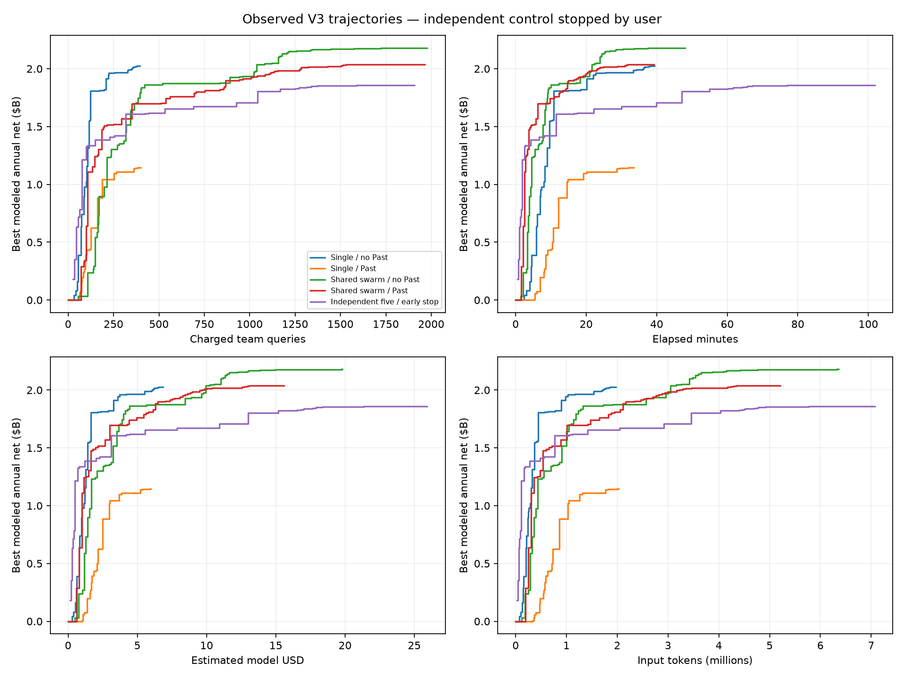
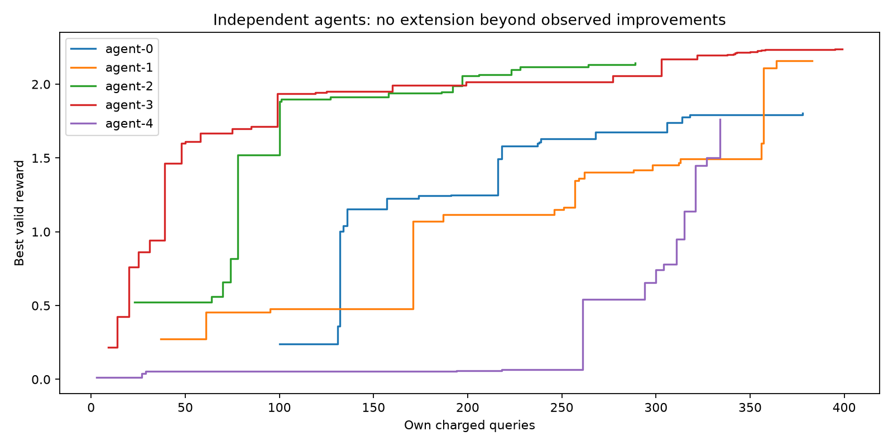
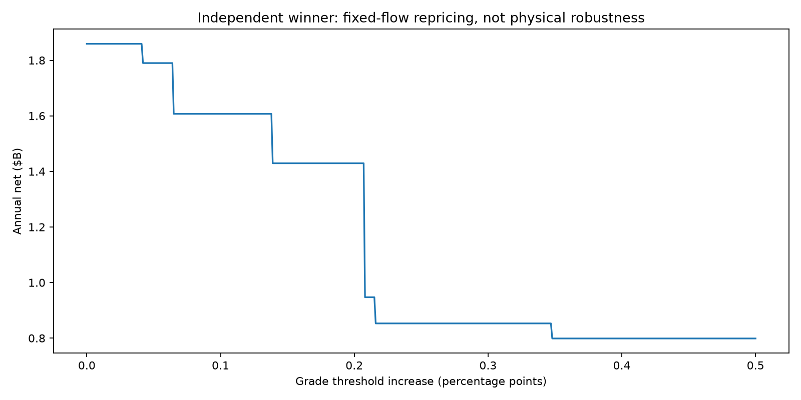

Run `swarm-3c4ef43770314f2d96d51757b37f47c7`. Status user_stopped. The requested cutoff was 19:39:30 UTC; the confirmed direct stop is recorded in the evidence. This is not a completed 2,000-query result.
Logged charged queries: 1906/2000. Best valid reward: 2.239459. Best modeled annual net: $1.859B/year. Saved model cost: $25.93. Last logged elapsed time: 101.8 minutes.
Backend calls: unavailable. Charged queries are not backend calls. Forced termination may leave an in-flight operation outside saved submission counts.
| Agent | Logged queries | Best reward |
| agent-0 | 394 | 1.803232 |
| agent-1 | 399 | 2.158038 |
| agent-2 | 379 | 2.141959 |
| agent-3 | 400 | 2.239459 |
| agent-4 | 334 | 1.760222 |
- Versus Single / no Past endpoint (2.438316), the independent best is -8.16%. Resource use and stopping rules differ; this is descriptive, not a causal estimate.
- Versus Single / Past endpoint (1.380001), the independent best is +62.28%. Resource use and stopping rules differ; this is descriptive, not a causal estimate.
- Versus Shared swarm / no Past endpoint (2.624930), the independent best is -14.69%. Resource use and stopping rules differ; this is descriptive, not a causal estimate.
- Versus Shared swarm / Past endpoint (2.455338), the independent best is -8.79%. Resource use and stopping rules differ; this is descriptive, not a causal estimate.
- Saved submissions: 1635; valid 1427, invalid 176, rejected 32.
- Source-copy submissions: 0; citation-bearing submissions: 0; retrieved findings: 0.
- Best-design topology matches in 0/10 agent pairs. Different settings/topologies are measured separately from reward.
- Increasing all grade thresholds by 0.05 percentage points reduces saved winner net by 3.73%. This is fixed-flow repricing with fallback sale categories, not a new simulation.
The original four completed runs and two failed attempts are preserved. This control is stored separately as `independent_partial` in report-data.json, preventing it from being classified as a completed or failed infrastructure trial. The shared swarms have a 2,000-query allowance; the single agents have 400. Matched-query CSVs compare observed prefixes only. One run per condition cannot establish statistical reliability.
Validation: 22/22 checks passed. Usage covers saved records; any unmatched in-flight call is not silently reconstructed.
Combined figures · Evidence · Matched queries · Validation


